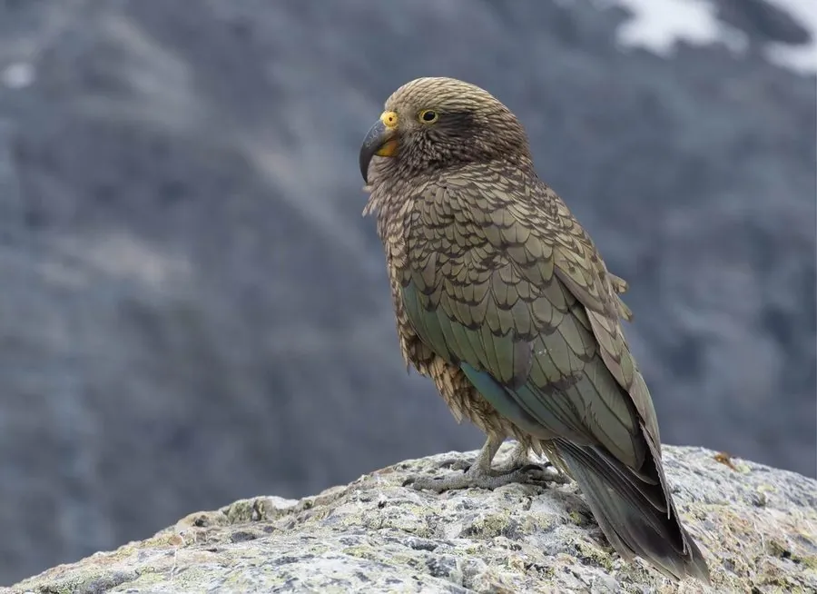

鸟类 · 动物界
啄羊鹦鹉 Nestor notabilis

新西兰南岛高山上的大型鹦鹉，橄榄绿色羽毛、喙下弯，好奇心极强，会拆汽车雨刷、翻垃圾桶，甚至啄食羊背。
- 分类
- 门脊索动物门纲鸟纲目鹦形目科鹦鹉科属啄羊鹦鹉属
- 栖息环境
- 新西兰南岛的高山草甸、山毛榉林和雪线附近，也常出没于滑雪场和营地
- 地理分布
- 新西兰南岛高山地区特有，中国无分布
- 保护级别
- IUCN 濒危（EN）；新西兰特有，中国无分布
物种志
啄羊鹦鹉体长 46–50 cm，体重约 0.75–1 kg，是新西兰南岛特有的大型鹦鹉。它的羽毛以橄榄绿色为主，背部略带褐色，翅膀下有橙红色斑块，喙长而向下弯曲，呈灰褐色，眼睛周围有一圈深色羽毛。它的爪子灵活有力，能在岩石和树枝间攀爬。
啄羊鹦鹉生活在新西兰南岛的南阿尔卑斯山和高山草甸，是少数能在雪线附近生活的鹦鹉。它以植物的根、茎、果实和昆虫为食，也吃腐肉；在食物匮乏的冬季，有少数个体会啄食羊背上的脂肪，因此得名“啄羊鹦鹉”。它最出名的是极强的好奇心和解决问题的能力，会拆解汽车雨刷、翻找背包、打开垃圾桶，甚至合作完成任务。繁殖期在岩石缝隙或树根下营巢，每窝 2–4 枚卵，孵化约 21 天。由于天敌和人类冲突，其种群数量下降，被列为濒危物种。
形态与习性
- 食性植物根茎、果实、昆虫和腐肉
- 体长46–50 cm
- 体重约 0.75–1 kg
- 繁殖每窝 2–4 枚卵，孵化约 21 天
- 寿命野外约 15–20 年
- 智力能解决问题、合作完成任务，会拆解物品
- 习性冬季少数个体会啄食羊背上的脂肪
趣味知识
- 啄羊鹦鹉的英文名 Kea 来自毛利语，是世界上最聪明的鸟类之一。
- 它们会拆汽车的雨刷和密封条，还会翻游客的背包找食物。
- 啄羊鹦鹉能合作完成任务，甚至学会使用简单的工具。
- 冬季食物匮乏时，少数个体会啄食羊背上的脂肪，因此得名。